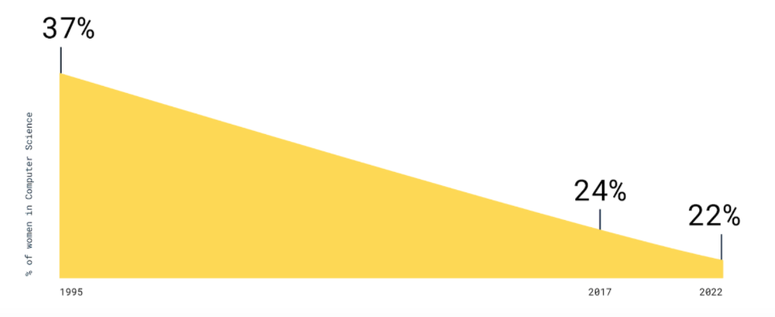

By Cordelia Pride & Marissa Shaffer

About
WELCOME TO GIRLS IN TECH: THE GAME! We created this website and game to raise awareness about the unspoken everyday challenges that women and girls in the male-dominated world of computer science face. We encourage you, whether you’re a girl or not, to play the game and see if you can win, because it’s fun, but also to read about the context of it and to come away with a better understanding and appreciation for the fantastic women in the tech industry!
Founders
MEET CORDY AND MARISSA. Two juniors in high school, and who worked together to create this project. Marissa worked on the game itself, while Cordy built the website, and they collaborated on the research and information that you’re reading now. When deciding what to make for the hackathon, they wanted to create something that was fun, but had a serious and meaningful message or intent behind it. Both members of their school’s Girls Who Code club at school, they figured why not run with that idea and create a game and website to illustrate what it’s like being a girl programmer? Thus, Girls In Tech: The Game was born.
HELLO THERE, Marissa here to introduce myself! I’ve been interested in technology for around four years, or since we did a mini LEGO mindstorm intro to robotics course in seventh grade. I’ve, since then, participated in numerous tech summer camps, events, and classes, both in and out of school. I’ve been lucky, in some instances, in my situation as a girl in tech― my teachers at school are really nice and not sexist, and I have [a few] female friends who are also into tech― but, I’ve definitely already begun to experience some of the challenges that women face in the technology world simply because of our gender. In freshman year, my friend and I joined the CS club at our school, only to find ourselves surrounded by boys who were older, much more experienced, and pretty much ignored us after the first meeting. So, this year, with her, I decided to start a Girls Who Code Club to make a safe, fun, and productive space for girls at my school who are interested in tech. Cordy, the co-creator of this project, was one of the first members to join!-- thanks, Cordy :)-- We hope you have fun playing the game and exploring the site!
Impact
DID YOU KNOW, less than a QUARTER of the tech industry is female? AND, that number is projected to DROP over the next few years? The number, as of 2017, was about 24%, and Asian women made up just 5% of that number, while Black and Hispanic women accounted for 3% and 1%, respectively. All this is despite the fact that STEM jobs have increased steadily over recent years! This severe underrepresentation makes it difficult for girls to feel like they belong in such a male dominated industry.
“OKAY, so there aren’t that many girls, so what? If a girl is as smart as or smarter than a boy, she has an equal opportunity to prove herself and do well, right?” Well... not exactly. Even once girls actually enter the tech industry, they find themselves facing a myriad of unanticipated challenges, both internal and external. The sad, yet unsurprising conclusion is that this leads to a very steep uphill climb for women to “make it” in the tech industry, which can be shown by the fact that 56% of women end up leaving the IT world during their career, and only 30% of 450 executive tech companies have women in leadership positions. With this game below, we hope to shed light on these challenges and show you not only how difficult it is to succeed as a girl in tech, but how strong and resilient women in tech are by showing you all they have to persevere through.

Game
Relevance
WHAT’S THE RELEVANCE? All the obstacles that were flashing at the top of the game are real life obstacles that women in tech experience. Some are external, coming from others or the environment, like sexist comments and biases, tokenism(eg. being treated as the ‘diversity hire’), sexual harassment, the gender gap/underrepresentation, and lack of support. These are often just parts of being a woman in tech that are awful, yet unavoidable. However, many of the obstacles are self imposed, because of internalized feelings of not being as good as our male peers. Self-doubt, imposter syndrome, lack of confidence, and self-censoring are all internal challenges that can set girls back unnecessarily. As members of the tech community, regardless of gender, we can work to abolish all of these challenges by lifting up women in tech and acknowledging them, and all the struggles they go through. That’s what we wanted to do with this game.
Future
SO, BASICALLY, BEING A WOMAN IN TECH SUCKS? Absolutely not. While there are a ton of unrecognized barriers and challenges that female programmers face, there are some amazing things about being a girl in tech. First of all, girls in tech often have a unique perspective to bring to the table, and while they can’t speak on behalf of their entire gender, they will likely have insights that help make projects geared toward all people, and not just dudes. Second, there’s a small, yet growing community of girls in tech! We can bond over our shared experiences, help each other out, and be support systems for each other!
OUR GOAL with this website was to spread awareness for all the hard-working women in tech. If you’re a guy, we hope you’ve learned something about the challenges girls in tech face, but also about how strong they are, and hope that you’ll treat women that you encounter in tech with just as much respect as men, and that you won’t discard their opinions. If you’re currently a woman in tech, don’t give up and don’t forget how far you’ve come. If you encounter young girls who are just starting out in the tech industry, empower them not to give up as well! Lastly, if you’re an aspiring female computer scientist, we hope this hasn’t discouraged you too much because we can confidently say, as two girls who code, that you can make it if you set your mind to it. We should all be empowering, challenging, collaborating, and listening to one another. If we do, the future in technology will be bright for people of all genders!